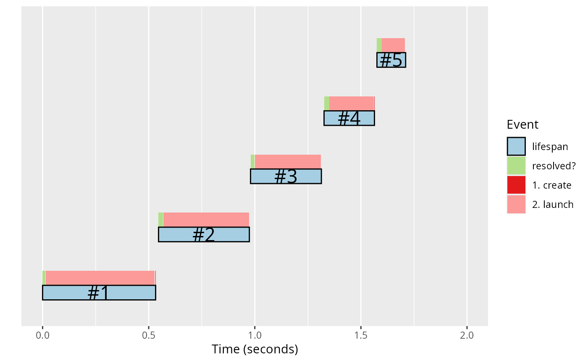
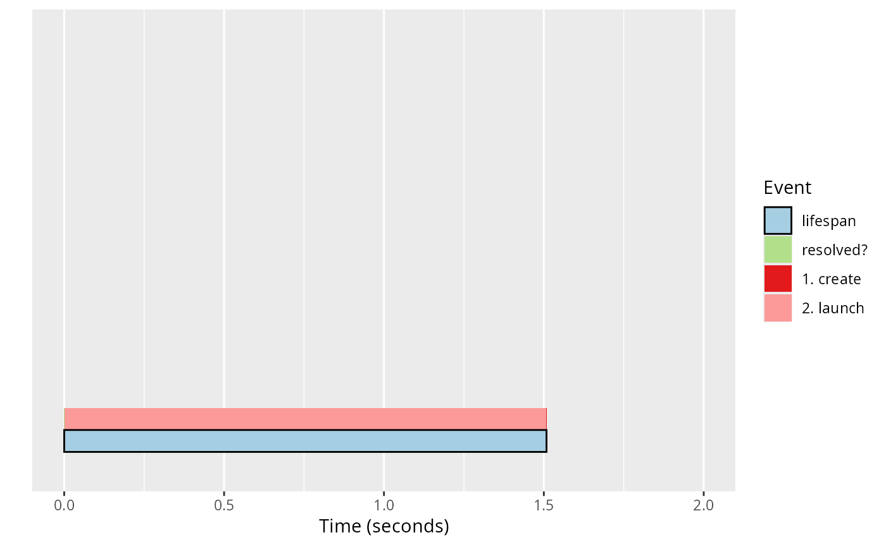
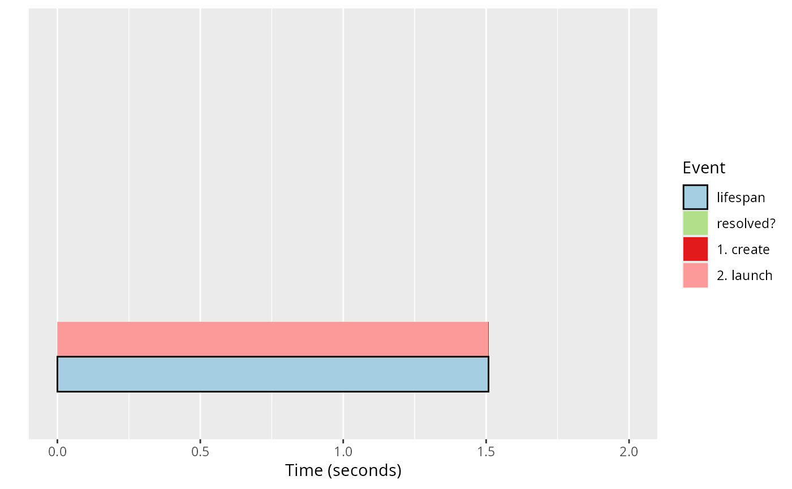
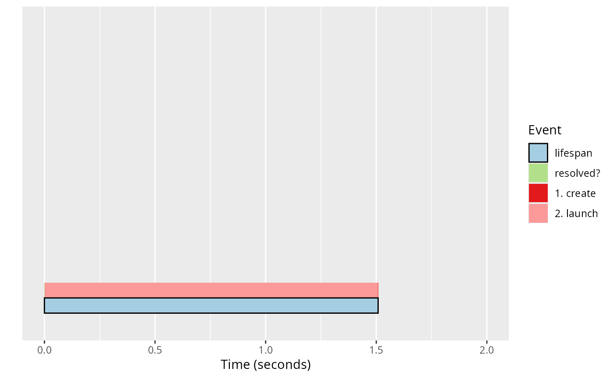
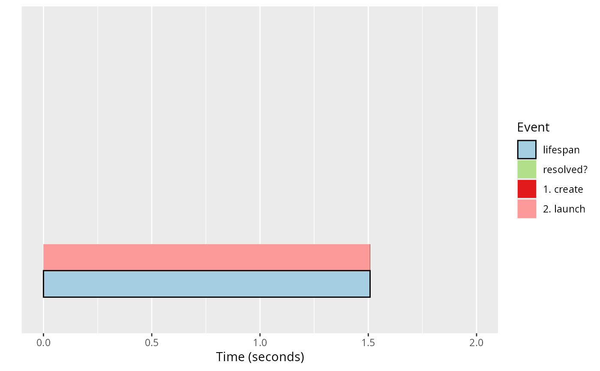

Create a Future Journal Plot
ggjournal.RdCreate a Future Journal Plot
ggjournal(
x,
style = c("future", "future-worker", "worker"),
flatten = FALSE,
time_range = getOption("future.tools.ggjournal.time_range", NULL),
item_range = getOption("future.tools.ggjournal.item_range", NULL),
events = NULL,
baseline = TRUE,
label_fmt = "#%s",
annotate = c("future_label"),
arrows = c("launch", "gather"),
layer_height = c(1/4, 1/4, 1/4, 1/8),
...
)Arguments
- x
A list of future::Future or FutureJournal objects.
- style
(character string) One of
"future","future-worker", and"worker".- flatten
(logical) If TRUE, futures are not separated vertically.
- time_range
(optional vector of length two) The range of time to displayed.
- item_range
(optional vector of length two) The range of future or worker indices to displayed.
- events
(character vector; optional) Events to be displayed. If NULL, then all events are displayed.
- baseline
(POSIXct; optional) A timestamp to server as time zero for the relative timestamps. If
TRUE(default), then the earliest timepoint observed is used as the baseline.- label_fmt
(format string; optional) Used to create labels if
future_labelis missing. If NULL, no labels are created.- annotate
(character vector) Additional annotations to add.
- arrows
(character vector) Type of arrows to draw.
- layer_height
(integer vector of length four) Height of each of the four possible layers of stacked events. Their total height, the sum, should be less than one in order for futures to not overlap.
- ...
Currently not used.
Value
A ggplot2::ggplot object.
Examples
library(future.apply)
library(future)
slow_fcn <- function(x) {
Sys.sleep(x / 10)
sqrt(x)
}
## Plot with fixed x and y limits
ggjournal_x <- function(js) {
for (by in c("future", "worker")) {
item_range <- if (by == "future") c(1, 5) else c(0, 1.8)
print(ggjournal(js, by = by,
time_range = c(0, 2.0), item_range = item_range))
}
}
plan(sequential)
js <- capture_journals({
fs <- lapply(5:1, FUN = function(x) future(slow_fcn(x)))
vs <- value(fs)
})
ggjournal_x(js)

 js <- capture_journals({
vs <- future_lapply(5:1, FUN = slow_fcn)
})
ggjournal_x(js)
#> Warning: Removed 1 rows containing missing values (`geom_text()`).

#> Warning: Removed 1 rows containing missing values (`geom_text()`).

plan(multisession, workers = 2)
js <- capture_journals({
fs <- lapply(5:1, FUN = function(x) future(slow_fcn(x)))
vs <- value(fs)
})
ggjournal_x(js)
js <- capture_journals({
vs <- future_lapply(5:1, FUN = slow_fcn)
})
ggjournal_x(js)
#> Warning: Removed 1 rows containing missing values (`geom_text()`).

#> Warning: Removed 1 rows containing missing values (`geom_text()`).

plan(multisession, workers = 2)
js <- capture_journals({
fs <- lapply(5:1, FUN = function(x) future(slow_fcn(x)))
vs <- value(fs)
})
ggjournal_x(js)

 js <- capture_journals({
vs <- future_lapply(5:1, FUN = slow_fcn)
})
ggjournal_x(js)
#> Warning: Removed 2 rows containing missing values (`geom_text()`).
js <- capture_journals({
vs <- future_lapply(5:1, FUN = slow_fcn)
})
ggjournal_x(js)
#> Warning: Removed 2 rows containing missing values (`geom_text()`).
 #> Warning: Removed 2 rows containing missing values (`geom_text()`).
#> Warning: Removed 2 rows containing missing values (`geom_text()`).
 ## Shut down parallel workers
plan(sequential)
## Shut down parallel workers
plan(sequential)